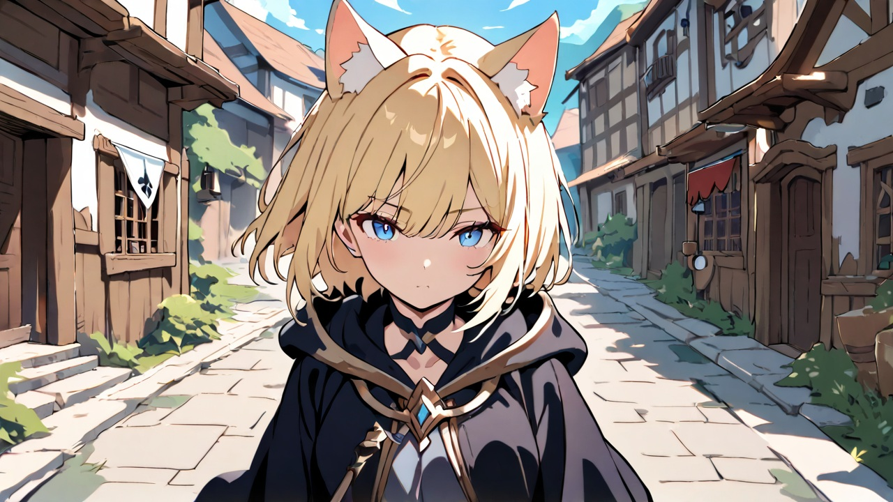
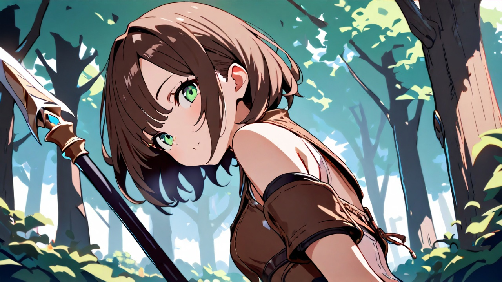
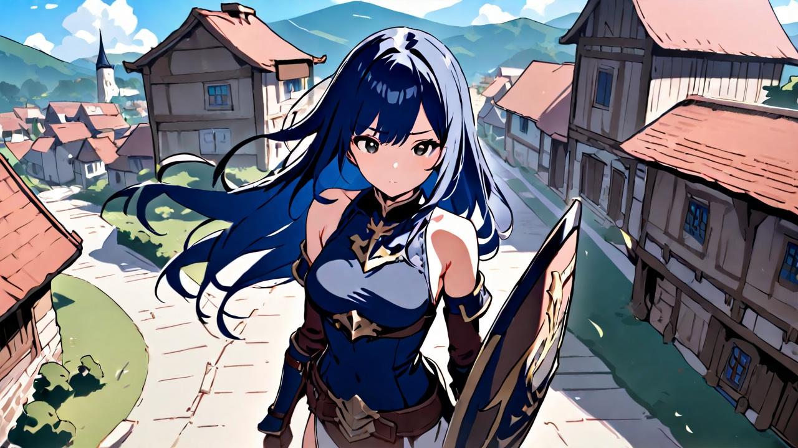

主人公
本名は大野 真美(おおの まみ)。魔法使い。金髪碧眼の猫耳キャラクター。
夏休み中の予備校生で、医療実験に参加した。攻撃魔法と回復魔法を切り替えて戦闘するスタイル。
料理と調薬を中心に生産活動にも精を出す。パーティーリーダーを務める。

槍使い
本名は安達みくる。真美の友人。
明るい性格でムードメーカー。VRゲーム内では槍で攻撃して、木工職人を名乗り木工細工のアクセサリーを作ったりしている。

大盾使い
本名は春巻桜。真美の友人。
いつでも丁寧語でしゃべり、お嬢様風。盾による守りを固めて、パーティーの防御を担当する。
鍛冶にちょっと興味があるらしく、加工品を作ったりしている。
東村、村長
プレイヤーにクエストを与えたりするNPC。薬草採取、キノコ採取、そして調薬も教えてくれる。
奥さんと二人暮らし。
プレイヤー・パーティー
リーダー「アルク」。「シロガネ」「アリクイ」「イシバシ」の成人男性4人。
ミケたちに声をかけ、一緒にボス討伐などを行う。
パーティー「お米券」／白魔法師
お嬢様の少女。ウサギのマイケルを所有する、サーバー内でも能力の高い白魔法師。
ぬいぐるみ、帽子などを作成するクラフターでもある。
パーティー「お米券」／エルフのダガー使い
ヒカリの保護者。短剣による鋭い攻撃でヒカリを守る守護者。メイドさん。
パーティー「お米券」／ヒューマンの老師
白髪の短髪、ローブをまとうヒカリの執事。